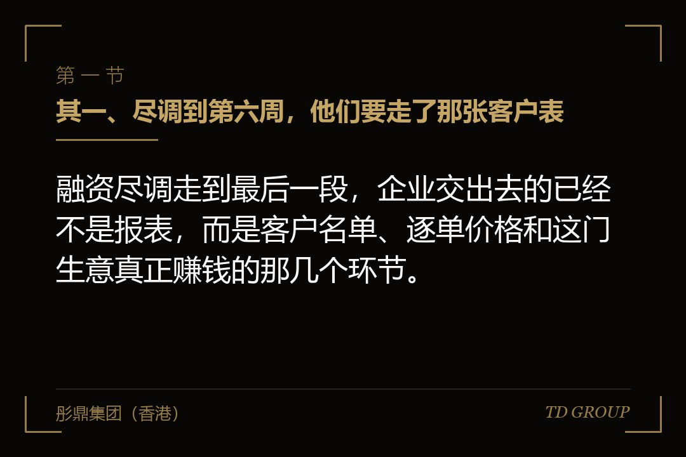
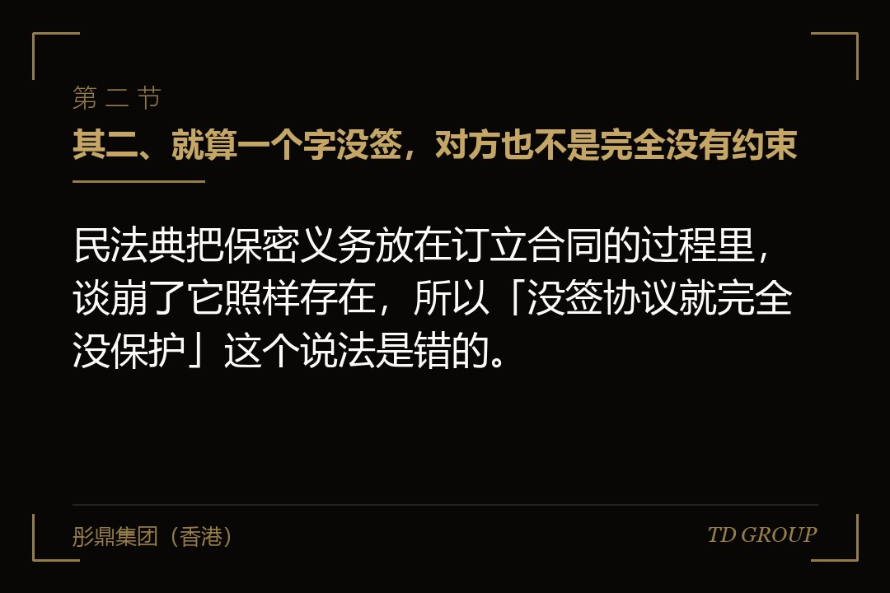
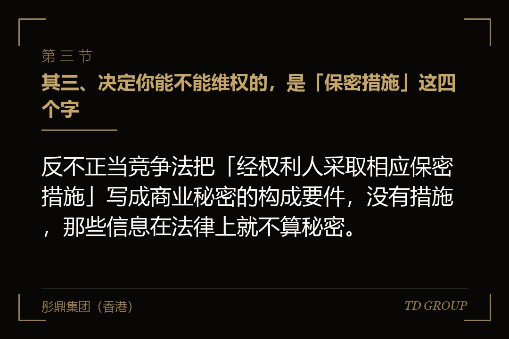

其一、尽调到第六周，他们要走了那张客户表

结论先行：融资尽调走到最后一段，企业交出去的已经不是报表，而是客户名单、逐单价格和这门生意真正赚钱的那几个环节。
假设有家做工业清洗剂的企业，年营收两亿出头。一家投资机构三月开始接触，签了保密协议，四月进场。头两个月看的都是常规的东西：财务报表、纳税申报、社保缴纳、合同台账。到了第六周，对方提出要看前五大客户的逐单价格，以及几个主力产品的工艺参数。
老板犹豫了半天还是给了。他的判断很朴素：协议都签了，不给就是不配合，不配合这轮就黄了。资料通过数据室发过去，没有水印，可以下载，账号是对方项目组共用的一个。
八月，机构给了一份很客气的回复，说内部讨论下来这个阶段不适合出手。十一月，同行业另一家企业拿到了这家机构的投资，产品线高度重合。又过了几个月，他在两个老客户那里，以低于自己报价八个点的价格丢掉了年度合同。
他去找律师。律师问的头一个问题不是协议是怎么签的，而是另一句：你能证明对方用了你给的那些东西吗。他答不上来。
先把边界划清楚。投资人是不是真投资人、数据室怎么搭、尽调都查哪几类东西、员工的竞业限制与不招揽，各自都有专门的讨论，本文不展开。这里只讲一件事：那份签在开头的保密协议，在你交出核心信息这件事上，究竟管得住什么。
其二、就算一个字没签，对方也不是完全没有约束

结论先行：民法典把保密义务放在订立合同的过程里，谈崩了它照样存在，所以「没签协议就完全没保护」这个说法是错的。
民法典第五百零一条写得很直接：当事人在订立合同过程中知悉的商业秘密或者其他应当保密的信息，无论合同是否成立，都不得泄露或者不正当地使用；泄露、不正当地使用造成对方损失的，应当承担赔偿责任。
这条规则的来源是原合同法里的对应条款，民法典把范围扩大了一档——从「商业秘密」扩到「其他应当保密的信息」。也就是说，一份还够不上商业秘密标准的经营数据，只要按常理属于不该外传的，对方同样负有不得泄露的义务。
它的分量在于，这项义务不依赖任何签字，也不因为交易没谈成而消失。投资人在尽调阶段看到的东西，本来就在这条规则的射程之内。
但它的短板同样明显：要对方赔钱，前提是「造成损失」，而损失的数额得由你举证。老板通常算得出丢掉的那两个合同值多少钱，却证明不了这笔损失和对方的行为之间有关联。
所以法定义务是底线，不是方案。它保证你不会一无所有地站在起点，却不会替你把后面那几步走完。关键在于，从底线走到能真正主张权利，中间隔着的正是下一章那个要件。
其三、决定你能不能维权的，是「保密措施」这四个字

结论先行：反不正当竞争法把「经权利人采取相应保密措施」写成商业秘密的构成要件，没有措施，那些信息在法律上就不算秘密。
反不正当竞争法对商业秘密的定义是：不为公众所知悉、具有商业价值并经权利人采取相应保密措施的技术信息、经营信息等商业信息。这三样是并列的构成要件，缺一样就不成立。
前两样是信息本身的属性。这份配方是不是行业里人人都会、这张价格表有没有商业价值，法官看的是客观情况，你个人的主张分量有限。
第三样不一样：它完全取决于你自己做过什么。你有没有把它标注为机密、有没有限制知悉范围、有没有签协议、有没有设账号权限、有没有留下访问记录——这一整串动作，是三个要件里只有你能单方面决定其成立与否的那一项。
举证责任的分配也压在这一点上。权利人先提供初步证据，合理表明商业秘密被侵犯之后，涉嫌侵权人才需要证明自己不存在侵权行为。这个转移很有价值，但它有前置条件：你得先拿得出那份初步证据。
而「我采取了保密措施」正是初步证据里绕不开的一项。回到开头那家企业：数据室没有水印、可以下载、账号还是共用的。这几件事本身，就是对方律师会拿来说「你并未采取相应保密措施」的材料。
本质上，签保密协议这个动作的价值，一半在于约束对方，另一半在于给你自己留下一份「我确实把它当秘密对待过」的证据。具体规则以反不正当竞争法的正式文本为准。
其四、对方律师加的那几条，每一条都在往回收
结论先行：一份由投资人起草的保密协议，真正决定边界的往往不是开头「保密」那两个字，而是后面那几行写得很平常的例外条款。
先看可披露对象。标准文本通常允许对方把信息给到关联方、其出资人、聘请的律师会计师顾问，有的还会写上「其已投资企业」。最后这一项是要重点看的，你要争取的写法是限于本次交易之必要，并且由对方对这些人的行为承担责任。
再看剩余信息条款。这一条允许对方人员使用「未刻意记忆而保留在脑中」的信息，听上去合情合理，实际效果是把技术类内容掏空了大半。能删就删，删不掉至少要限定为不适用于书面标注为机密的技术资料。
第三条是不限制投资同业。绝大多数机构不会接受这个限制，这是行业惯例，别在这上面耗时间。可以退而求其次：约定信息隔离，让接触过本项目的具体经办人员在一定期间内不参与同业项目，以及投了同业之后不再要求获取本项目未披露的资料。
期限也要单看。市面上常见的是签署后两到三年，而商业秘密在法律上的保护是持续到信息进入公有领域为止。约定一个较短的期限，存在被解释为双方就保护期另有安排的风险，技术类信息尽量争取写成「至该信息公开时止」。
最后是单向还是双向。双向看着公平，但真实情况是你给出去的资料远多于对方给你的，双向文本里那些互惠性的限制，实际约束的多半是你自己。
其五、期限、范围、违约金：三处填得含糊，后面就用不上
结论先行：保密协议维权最难的那一步不是证明对方看过，而是把你因此损失了多少钱算出来，并且让法院采信这个数。
损失举证是这类纠纷的真正瓶颈。客户流失可能来自价格、来自服务、来自对手的销售动作，把它归到「因为他看过我的价格表」这一条上，需要一整条证据链。
所以协议里要有违约金或者损失计算方法。可行的写法包括按被披露信息的研发与获取成本计算、按违约方因此获得的利益计算，或者直接约定一个固定数额并说明其形成依据。这一条填不填，决定的是将来诉讼里你有没有一个可以起算的数。
信息范围同样要能界定。只写「一切商业信息」等于没写，落到具体案子里会被质疑范围不明。实务上的做法是书面交付的资料逐份标注机密，口头或现场披露的内容在若干个工作日内补一份书面确认。
返还与销毁那一条不要漏。交易终止后的指定期间内，对方应返还或销毁全部资料并出具书面确认；允许其为内部合规存档保留必要副本，但该副本仍受本协议约束。这句话写进去，将来才有理由要求对方说明手上还留着什么。
还有一处常被忽略：约定争议的管辖与适用法律。对方是境外主体或者境外基金时，这一行决定了你将来要在哪里、按哪套规则去主张，成本可能相差一个数量级。
其六、比签字更管用的，是给资料的顺序
结论先行：保密协议只在事情发生之后才用得上，尽调期间真正能减少损失的，是把核心资料往后放、往窄放、往少放。
分层是最有效的一招。把资料分成三层：可以公开的、可以脱敏后给的、以及构成核心竞争力的。头一层随时给，第二层签完协议给，第三层留到对方内部立项通过、甚至投资决策委员会过会之后再谈。
脱敏不等于敷衍。客户名单可以写成客户甲、客户乙，附上行业、区域和采购规模；价格可以给区间或者以某个基准指数化；工艺参数可以只给性能指标不给配方组成。这些足够对方判断生意好不好，不足够对方复制。
核心信息尽量安排现场查阅，只读不给副本。配方、源代码、逐单价格表这类东西，让对方到你的办公室看，看完不带走，需要哪几个数字就当场记录并留下书写记录。这在成熟机构那里不是刁难，是常规安排。
数据室的技术设置要用起来：逐人独立账号、禁止下载、页面水印带上查看人姓名与时间、保留完整访问日志。共用账号是最常见也是最致命的疏漏，出了事你连是谁看的都指认不出来。
这些动作有双重身份。它们既在减少信息外流，本身又构成了前面说的那项要件的证据。开头那家企业若是这么做了，律师那个问题就有答案：日志能显示某个具体人员在某天反复调阅了哪几页价格表。
其七、这份协议什么时候失效，什么时候还活着
结论先行：这轮交易谈崩了，保密协议并不会跟着一起结束，它是独立于全部交易文件、单独起算保护期限的一份约定。
投资意向书里通常有三类条款是有约束力的：排他、费用承担和保密。这三类各有各的期限，排他期到了不代表保密义务同时到期，而实务中把这两个日期记混的老板不在少数。
交割了也不等于结束。同一轮里接触过、最终没有进来的那几家机构，手上仍然留着你的资料，它们受约束的依据只有当初那份协议。所以每一轮融资结束后，都该做一件事：对所有未成交方发出书面通知，要求按约定返还或销毁并回函确认。
往后每一次资本动作都会把同一批资料再交一遍。下一轮融资、被并购时的买方尽调、申报上市时的中介核查，面对的是不同的人和不同的口径，这一整套动作要重新走一遍，不能沿用上一次的名单。
到了上市审核那一步，问题会换个方式回来。审核关注发行人的核心技术来源是否清晰、有没有权属争议、内部有没有可执行的信息与商业秘密管理制度。历史上那些共用账号、无差别下载的做法，这时候会变成需要正面解释的事项。
因此，把保密这件事当成一次性的签字动作，是它最常见的失效方式。它更接近一套要长期运行的流程，而流程的起点是有人负责登记「什么资料、什么时候、给了谁」。
其八、今天下午就能核完的一张自查表
结论先行：这件事不必等到下一轮融资开始才动手，手上现有的那几份协议和那几份访问记录，半小时之内就能核完一遍。
先把签过的保密协议全部找出来，逐份看三处：保护期限有多久、可披露对象里有没有「已投资企业」这一类表述、有没有剩余信息条款。这三处决定了这份协议在最坏情况下还剩多少作用。
再列一份对外披露台账，写清楚给过谁、什么时候给的、给了哪几份、通过什么渠道给的。这张表不需要多复杂，但它是将来所有主张的起点，事后补是补不出来的。
然后查数据室：账号是不是逐人独立的、下载权限有没有关、日志还在不在、能不能导出。已经关闭的项目，日志要在关闭前导出留档，平台通常不会替你长期保存。
内部这一头也要看：有没有一份写下来的保密制度、员工入职时签的文件里保密条款是怎么写的、核心资料有没有做过密级划分、离职交接时有没有清收记录。这些是「采取相应保密措施」在公司内部的那一半，缺了它，对外那一半也站不稳。
最后是分级。把公司的信息资产过一遍，明确哪些属于给了就不再是秘密的核心内容，并且约定好这些内容在什么条件下才拿出来。这个动作只需要一次，往后每一轮融资都在吃它的红利。
我们跟华尔街俱乐部有合作，这类在尽调阶段丢掉核心信息的案子见得多一些，事后回看，出问题的极少是协议文本本身写得不好，多半是资料给得太早、太全、太没有痕迹。
最后留一个问题。假设你就是开头那家企业的老板，机构说不看完价格表和工艺参数就没法上会，而你手上只有一份两页纸的通用协议：你是先给资料保住这轮的机会，还是先花两周把分层、脱敏和数据室权限做好再给？